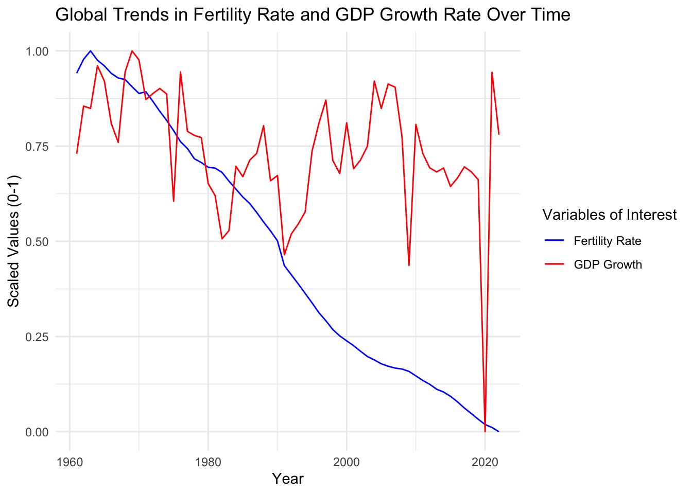
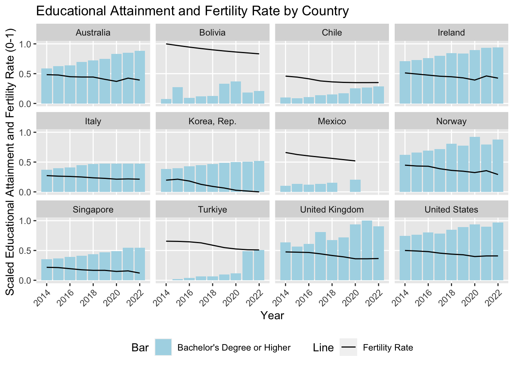
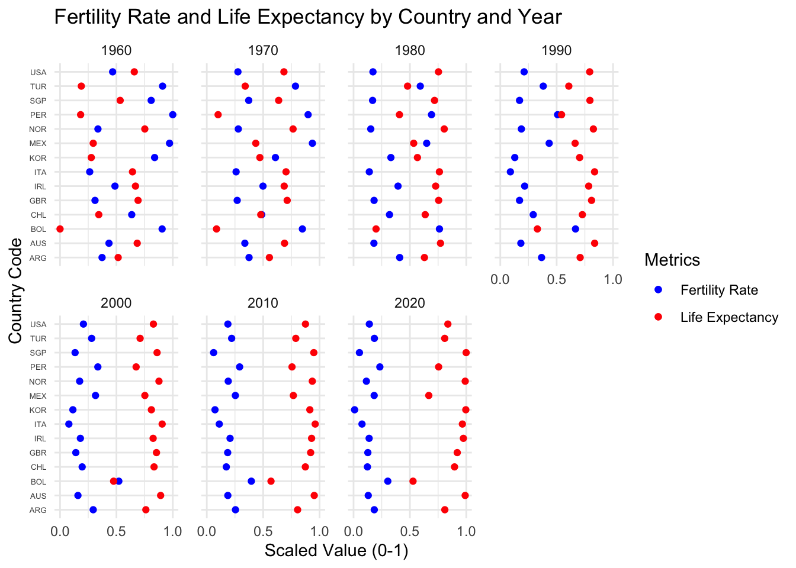
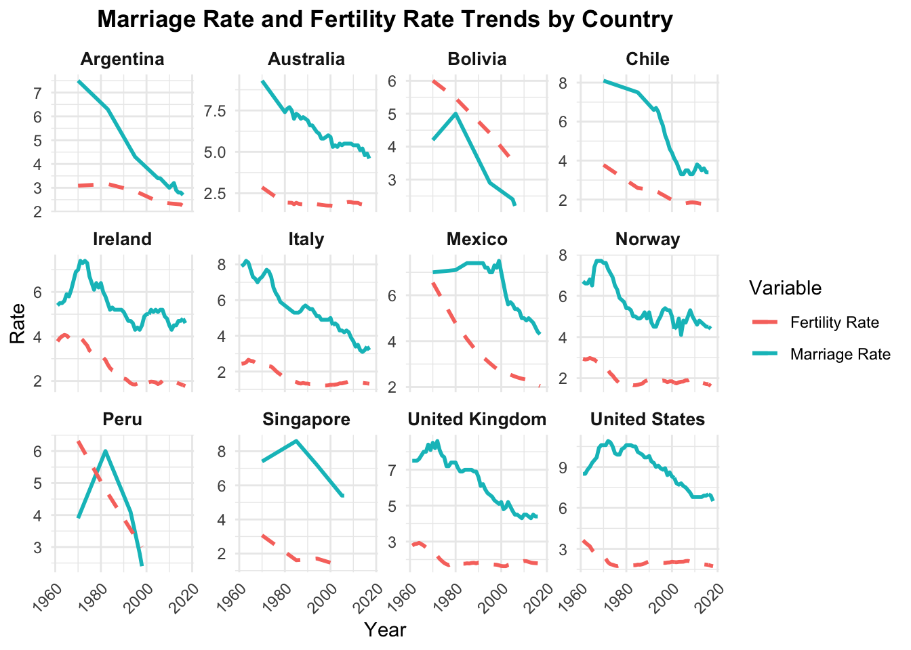
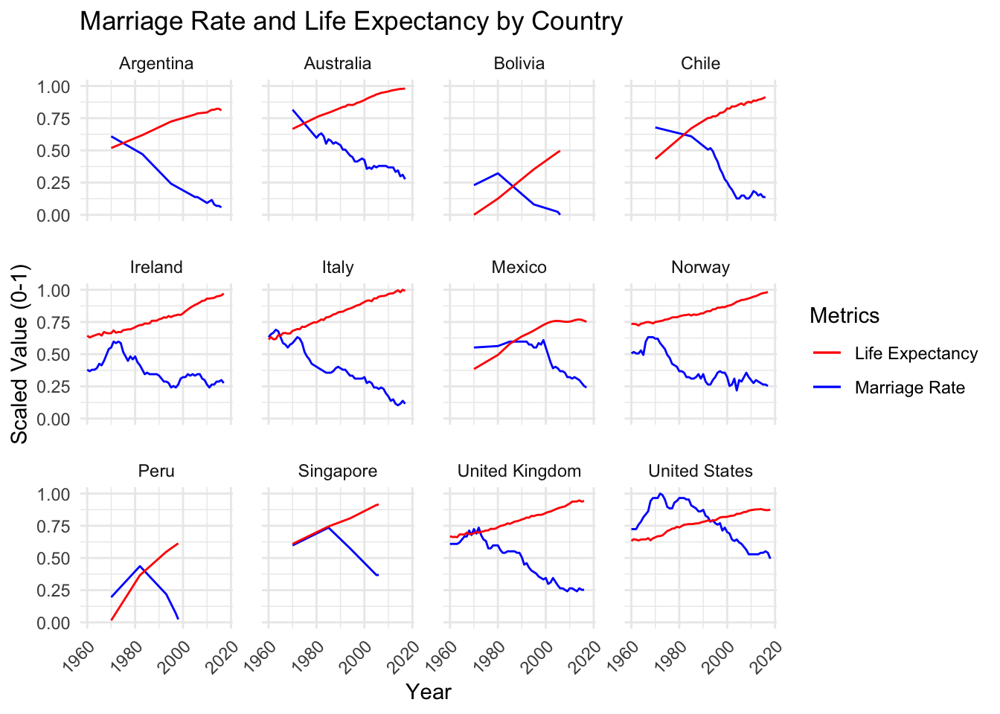
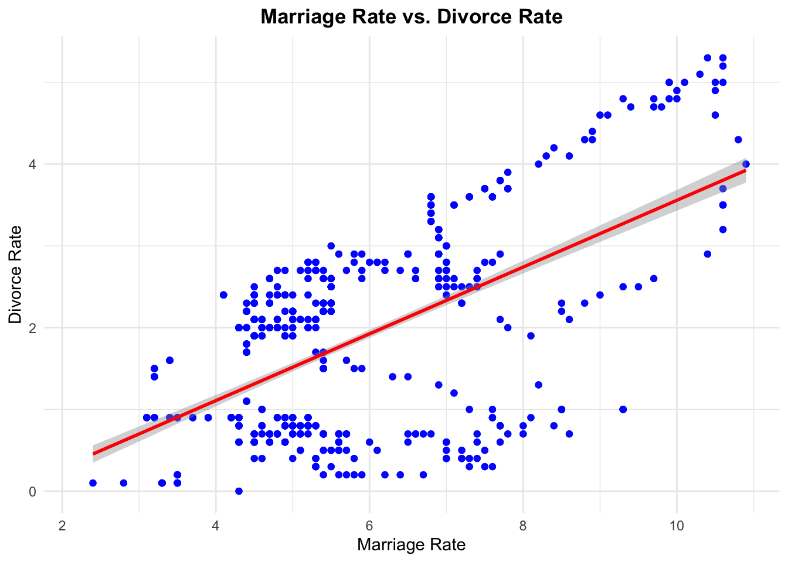
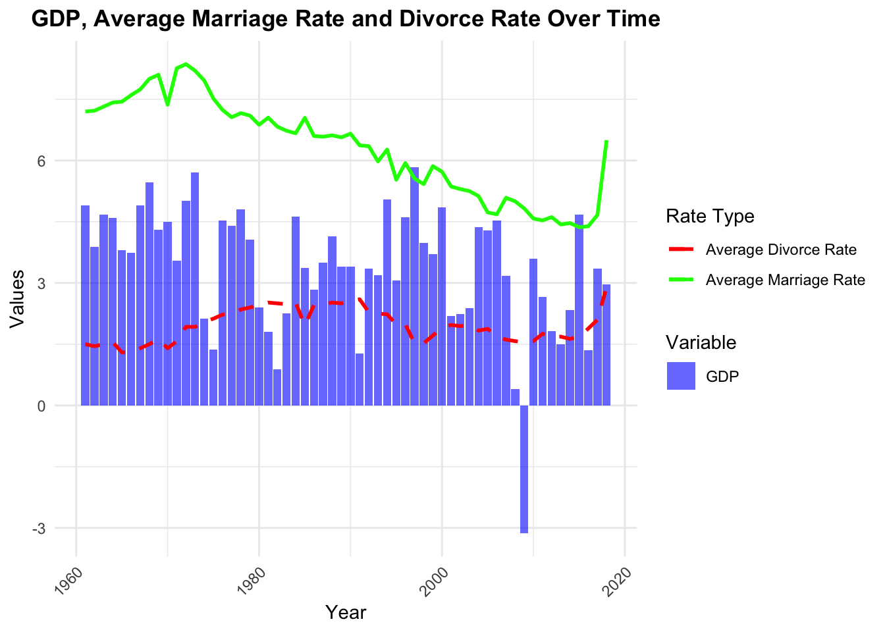

This visualization above illustrates the global trend of fertility rate from 1970 to 2020. It appears that regions with higher fertility rates, colored in blue in the graph, have diminished over the decades. On the other hand, areas with a lower fertility rate, colored in red, have increased significantly over the decades, expanding across Europe, the Americas, and parts of Asia. This trend reflects a global shift toward a lower fertility rate, which might be driven by improvements in education, healthcare, and economics.
The shape file used to make this graph is obtained from the link shown below: https://www.geoboundaries.org/globalDownloads.html
3.2 How Fertility Rates and GDP Growth Have Evolved Globally Over Time
Code
gdp <-read_csv("data_clean/gdp_long.csv", show_col_types =FALSE)
ggplot(scaled_gdp, aes(x = Year)) +geom_line(aes(y = mean_fertility, color ="Fertility Rate")) +geom_line(aes(y = mean_gdp, color ="GDP Growth")) +scale_color_manual(values =c("Fertility Rate"="blue","GDP Growth"="red")) +labs(title ="Global Trends in Fertility Rate and GDP Growth Rate Over Time",x ="Year",y ="Scaled Values (0-1)",color ="Variables of Interest" ) +theme_minimal()

This graph highlights the relationship between the average fertility rates (blue line) and the average GDP growth rate(red line) across the globe from 1960 to 2020. The y-axis displays the scaled value for these two variables because of the differences in their measuring units. Over the decades, fertility rates have shown a consistent declining trend, reflecting a shift towards a lower level of offspring. On the other hand, GDP growth has fluctuated over the years, revealing periods of economic growth and recessions, with two noticeable drops around 2010 and 2020, when global crises like the Great Recession and the COVID-19 pandemic happened. The steady decline in fertility rates with the fluctuation shown in GDP growth rate indicates that the changes in fertility rate are independent of the variations in the country’s economic health.
3.3 Fertility Rate Density Plot by High vs Low GDP Countries
marriage_divorce <- marriage_data |>left_join(divorce_data, by =c("Entity", "Code", "Year")) names(marriage_divorce)[1] <-"Country"names(marriage_divorce)[4] <-"MarriageRate"names(marriage_divorce)[5] <-"DivorceRate"filtered_education <- education_data |>filter(Country %in% marriage_divorce$Country & Year %in% marriage_divorce$Year)filtered_fertility <- fertility_data |>filter(Country %in% marriage_divorce$Country & Year %in% marriage_divorce$Year)filtered_gdp <- gdp_data |>filter(Country %in% marriage_divorce$Country & Year %in% marriage_divorce$Year)filtered_life <- life_data |>filter(Country %in% marriage_divorce$Country & Year %in% marriage_divorce$Year)final_data <- marriage_divorce |>left_join(filtered_education, by =c("Country", "Code", "Year")) |>left_join(filtered_fertility, by =c("Country", "Code", "Year")) |>left_join(filtered_gdp, by =c("Country", "Code", "Year")) |>left_join(filtered_life, by =c("Country", "Code", "Year"))##colSums(is.na(final_data))
Code
final_data <- final_data |>filter(!is.na(gdp_growth) &!is.na(fertility_rate)) |>mutate(GDP_Group =ifelse(gdp_growth >=median(gdp_growth, na.rm =TRUE), "High GDP", "Low GDP") )ggplot(final_data, aes(x = fertility_rate, fill = GDP_Group)) +geom_density(alpha =0.6) +# Semi-transparent fill for overlapping areaslabs(title ="Fertility Rate Distribution: High vs. Low GDP Countries",x ="Fertility Rate",y ="Density",fill ="GDP Group" ) +scale_fill_manual(values =c("High GDP"="blue", "Low GDP"="red")) +theme_minimal() +theme(plot.title =element_text(hjust =0.5, face ="bold"),axis.text =element_text(size =10) )
The above plot is a density plot comparing the distribution of fertility rates for countries grouped by GDP level (High GDP vs. Low GDP) where we calculated by comparing each GDP growth with median value. Both groups have peak around 1.5-2.5, though the low GDP countries show a slightly higher density at this point, meaning that there is a substantial number of countries, regardless of GDP level, within this fertility rate range. Low GDP countries show a notable secondary peak around a fertility rate of 1.2-1.3, which isn’t present in high GDP countries. High GDP countries have more spread in the 2.5-3.5 fertility rate range. Both distributions have long “tails” extending toward higher fertility rates though these become quite sparse. Overall, the distributions suggest that while there is significant overlap between high and low GDP countries, there are some distinct patterns in fertility rates associated with economic development.
3.4 The Relationship Between Education Levels and Fertility Rates
Code
education <-read_csv("data_clean/education_long.csv", show_col_types =FALSE)code <-unique(marriage_rate$Code)education_country <- education |>filter(Code %in% code)fertility_country <- fertility_rate |>filter(Code %in% code)education_clean <-na.omit(education_country)education_clean <- education_clean |>filter(Year %in%c(2014:2022))edu_fertility <-left_join(education_clean, fertility_country, by =c("Code", "Year", "Country"))row <-which(edu_fertility$education_level =="Doctoral or equivalent")edu_fertility <- edu_fertility[-row,]edu_fertility$education_level <-as.factor(edu_fertility$education_level)## Removed Peru because of the lack of datarow <-which(edu_fertility$Country =="Peru")edu_fertility <- edu_fertility[-row,]
ggplot(scaled_data, aes(x = Year)) +# Bar plot for educational attainment percentagesgeom_bar(aes(y = percentage, fill ="Bachelor's Degree or Higher"),stat ="identity") +# Line plot for fertility rategeom_line(aes(y = fertility_rate, group = Country, color ="Fertility Rate")) +scale_x_continuous(breaks =seq(2014, 2022, by =2)) +scale_y_continuous(breaks =c(0,0.5,1), ) +scale_fill_manual(name ="Bar", values =c("Bachelor's Degree or Higher"="lightblue") ) +scale_color_manual(name ="Line",values =c("Fertility Rate"="black") ) +facet_wrap(~Country) +labs(title ="Educational Attainment and Fertility Rate by Country",x ="Year", y ="Scaled Educational Attainment and Fertility Rate (0-1)" ) +theme(axis.text.x =element_text(angle =45, hjust =1),legend.position ="bottom",panel.grid.minor =element_blank())

The graph explores the relationship between fertility rates and educational attainment, represented by the black lines and blue bars in the graph, respectively. The fertility rate is measured by the number of children per woman, but educational attainment is measured in the percentage of people with a bachelor’s degree or higher. Due to the difference in the units of these two metrics, their values are scaled to ensure comparability. The scaled value is displayed on the y-axis and ranges from 0 to 1. The countries shown in the graph are chosen from multiple continents, including Europe, the Americas, and Asia-Pacific, to offer a global insight into trends. For these countries, the visualization demonstrates that fertility rates decrease as educational attainment increases from 2014 to 2022. This finding suggests that the global decrease in fertility rate might be associated with higher education levels developed in recent years.
3.5 Tracking Fertility Rate and Life Expectancy Trends Across Decades
ggplot(scaled_life_10, aes(y = Code)) +geom_point(aes(x = fertility_rate, color ="Fertility Rate")) +geom_point(aes(x = life_expectancy, color ="Life Expectancy")) +facet_wrap(~Year, ncol =4) +scale_color_manual(name ="Metrics",values =c("Fertility Rate"="blue", "Life Expectancy"="red") ) +scale_x_continuous(breaks =seq(0, 1, by =0.5)) +labs(title ="Fertility Rate and Life Expectancy by Country and Year",x ="Scaled Value (0-1)",y ="Country Code",color ="Metric" ) +theme_minimal() +theme(axis.text.y =element_text(size =5),legend.position ="right",panel.spacing =unit(1, "lines") )

This visualization shows the changes in fertility rates (blue dots) and life expectancy (red dots and measured in years) for various countries from 1960 to 2020. The values for these two variables are scaled as well due to the differences in their measuring units. The countries are the same as in the last graph, except for the addition of Peru, which is absent from the previous graph due to the lack of data. The graph displays a steadily increasing trend for life expectancy as fertility rates decrease over the years. Despite the regional differences in the changing rate, the opposing pattern shown in the graph suggests that improvement in healthcare might be associated negatively with the fertility rate, resulting in a reduction in family size.
3.6 The Relationship between Marriage Rate and Fertility Rate
Code
filtered_data <- final_data %>%filter(!is.na(MarriageRate) &!is.na(fertility_rate))# Line plotggplot(filtered_data, aes(x = Year)) +geom_line(aes(y = MarriageRate, color ="Marriage Rate"), size =1) +geom_line(aes(y = fertility_rate, color ="Fertility Rate"), size =1, linetype ="dashed") +facet_wrap(~ Country, scales ="free_y") +labs(title ="Marriage Rate and Fertility Rate Trends by Country",x ="Year",y ="Rate",color ="Variable" ) +theme_minimal() +theme(plot.title =element_text(hjust =0.5, face ="bold"),axis.text.x =element_text(angle =45, hjust =1),strip.text =element_text(size =10, face ="bold") )

Argentina, Australia, Bolivia, Mexico, Peru, Singapore and Chile have experienced gradual declines in marriage rates. In other countries, such as Ireland and the United Kingdom, marriage rates fluctuated before declining. Countries such as Mexico and Peru started with high fertility rates but then experienced sharp declines. Countries such as Norway and Singapore experienced relatively small declines in fertility and nuptiality. Marriage rates have remained relatively stable compared with fertility in many countries. Countries such as Singapore and the United States show clear trends, with marriage rates stabilizing at lower levels. Taken together, both the marriage rate and the fertility rate show a downward trend in different countries, and in some countries (Ireland, United Kingdom), the marriage rate and the fertility rate seem to be correlated because the trends and shapes of the two lines are similar.
3.7 Marriage and Longevity: Rising Life Expectancy, Declining Marriage Rates
ggplot(life_marriage_scaled, aes(x = Year)) +geom_line(aes(y = marriage_rate, color ="Marriage Rate")) +# Fertility Rate pointsgeom_line(aes(y = life_expectancy, color ="Life Expectancy")) +facet_wrap(~Country) +scale_color_manual(name ="Metrics",values =c("Marriage Rate"="blue", "Life Expectancy"="red") ) +labs(title ="Marriage Rate and Life Expectancy by Country",x ="Year",y ="Scaled Value (0-1)" ) +theme_minimal() +theme(axis.text.x =element_text(angle =45, hjust =1),panel.spacing =unit(1, "lines"))

This graph follows the previous exploration of fertility and marriage rates, which showed a positive association between the two metrics. Considering a previous graph demonstrates a negative association between life expectancy and fertility rate, this graph examines the relationship between marriage rates and life expectancy from 1960 to 2020 across different countries. The values of both variables are scaled due to differences in measuring units. While the visualization exhibits a steady trend of increasing life expectancy, marriage rates have been consistently decreasing in most countries. The trend observed here uncovers a global trend of people living longer lives but marrying less often, which could be one of the factors influencing family structures and leading to changes in the fertility rate. While the overall trend is global, the rate and the extent of changes remain regional, which could be influenced by other factors, like economic growth.
3.8 The Relationship between Marriage Rate and Divorce Rate
Code
ggplot(final_data, aes(x = MarriageRate, y = DivorceRate)) +geom_point(alpha =0.7, color ="blue") +geom_smooth(method ="lm", color ="red", se =TRUE) +labs(title ="Marriage Rate vs. Divorce Rate",x ="Marriage Rate",y ="Divorce Rate" ) +theme_minimal() +theme(plot.title =element_text(hjust =0.5, face ="bold") )
`geom_smooth()` using formula = 'y ~ x'

This scatterplot shows the relationship between marriage rates (x-axis) and divorce rates (y-axis) with each blue dot representing a data point. There’s a positive correlation between marriage and divorce rates, as shown by the red trend line with its gray confidence interval band. Marriage rates range from about 2 to 10, while divorce rates range from 0 to about 5. The data points show considerable spread around the trend line, suggesting that while there is a correlation, it’s not a perfect relationship. There appears to be more variability in divorce rates when marriage rates are between 4-6, creating a wider “band” of points in this region. At higher marriage rates (8-10), the data points seem to follow the trend line more closely, though there are some notable outliers, particularly at the highest marriage rates where some points show significantly lower divorce rates than the trend would predict.
3.9 Global Trend Focusing on GDP, Marriage Rate and Divorce Rate
Code
plot_data <- final_data %>%group_by(Year) %>%summarize(Avg_MarriageRate =mean(MarriageRate, na.rm =TRUE),Avg_DivorceRate =mean(DivorceRate, na.rm =TRUE),Avg_GDP =mean(gdp_growth, na.rm =TRUE) ) %>%ungroup()ggplot(plot_data) +geom_bar(aes(x = Year, y = Avg_GDP, fill ="GDP"), stat ="identity", alpha =0.6) +geom_line(aes(x = Year, y = Avg_MarriageRate, color ="Average Marriage Rate"), size =1) +geom_line(aes(x = Year, y = Avg_DivorceRate, color ="Average Divorce Rate"), size =1, linetype ="dashed") +labs(title ="GDP, Average Marriage Rate and Divorce Rate Over Time",x ="Year",y ="Values",fill ="Variable",color ="Rate Type" ) +theme_minimal() +theme(plot.title =element_text(hjust =0.5, face ="bold"),axis.text.x =element_text(angle =45, hjust =1) ) +scale_fill_manual(values =c("GDP"="blue")) +scale_color_manual(values =c("Average Marriage Rate"="green","Average Divorce Rate"="red" ))

This graph illustrates the relationship between GDP, marriage rates, and divorce rates from 1960 to 2020. The marriage rate (green line) shows a clear downward trend over the 60-year period, declining from around 7 to 5, though it spikes sharply upward near 2020. The divorce rate (red dashed line) remains relatively stable between 2-3 throughout the period, showing only minor fluctuations. GDP (blue bars) demonstrates considerable volatility, fluctuating mostly between 0 and 6, with a dramatic drop to negative values around 2015 before recovering. Notably, despite these significant changes in marriage rates and GDP, the divorce rate maintains remarkable stability over the entire period.
3.10 Correlation Matrix Display The Relationships between Every Pairwise Combination of Numeric Variables
The above correlation matrix heatmap help visualize the pairwise correlations between different numeric variables. Marriage Rate and Divorce Rate are highly positively correlated, indicating that higher marriage rates are associated with higher divorce rates. Marriage Rate and fertility rate also has high correlation. Fertility rate is negatively correlated with Year, which aligns with global trends where fertility rates decrease with higher education and over time. It is surprising that the fertility rate is negatively correlated with life expectancy. GDP growth has weaker correlations with most variables, suggesting it does not strongly align with the other variables in this data set. This heatmap provides a useful overview for identifying patterns and relationships within the data.